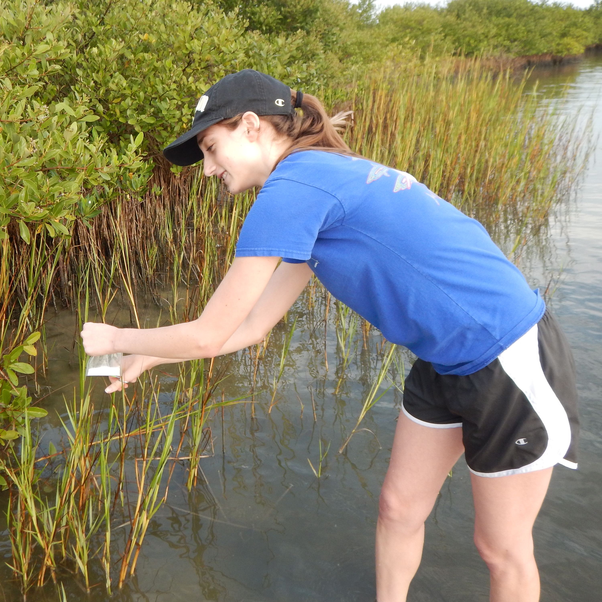
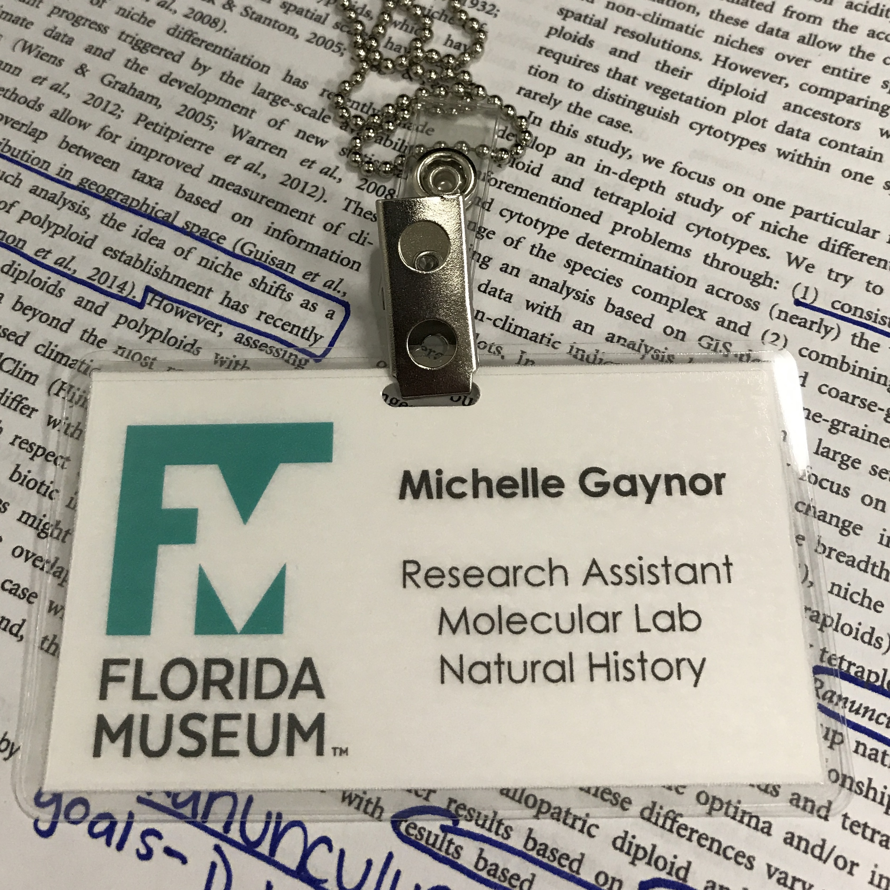

-
2018 - Present
University of Florida
Ph.D. in Botany
I am currently working with Drs. Pam and Doug Soltis for my graduate degree.
2014-2018
University of Central Florida
B.S. Biology
During my undergraduate, I worked with Drs. Eric Hoffman and Linda Walters on a project assessing genetic diversity within natural populations of smooth cordgrass to ensure effective restoration efforts. I also worked with Dr. Chase Mason and Simone Lim-Hing on a project focused on genome duplication impact on secondary metabolite composition in non-cultivated species.

2017
University of Missouri
NSF-REU
In Dr. J. Chris Pires lab, I worked with Hong An on unraveling the origins of allotetraploid Brassica napus.
2017
University of Florida
NSF-REU iDigBio
With Drs. Pam and Doug Soltis, I investigated niche divergence among ploidal levels in a classic autopolyploid system, Galax urceolata.

2016
University of Colorado-Boulder
NSF-REU
With Drs. Julienne Ng and Robert Laport, I investigated the influence of genome duplication on Brassicaceae and Rosaceae communities across the United States.
CV
Recent Curriculum vita is available upon request
News
Ph.D. Students Face Wages that Don’t Cover Living Costs
Nature
May 2022
Florida Museum Students Return to the Field
FLMNH Student Fieldwork
October 2021

National Science Foundation Graduate Research Fellowship
NSF-GRFP
May 2019
Climatic Niche Comparison among Galax Cytotypes
New Paper
July 2018
Polyploid Influences on Community Structure
First Publication
April 2018
Summer Off-Campus Research Experiences
Blog post with UCF-OUR
April 2018
College of Sciences Scholarships
UCF College of Science
October 2017
Student Researches Roses and Cabbage
UCF College of Science
October 2017
Student’s Award-Winning Restoration Research
UCF College of Science
April 2017